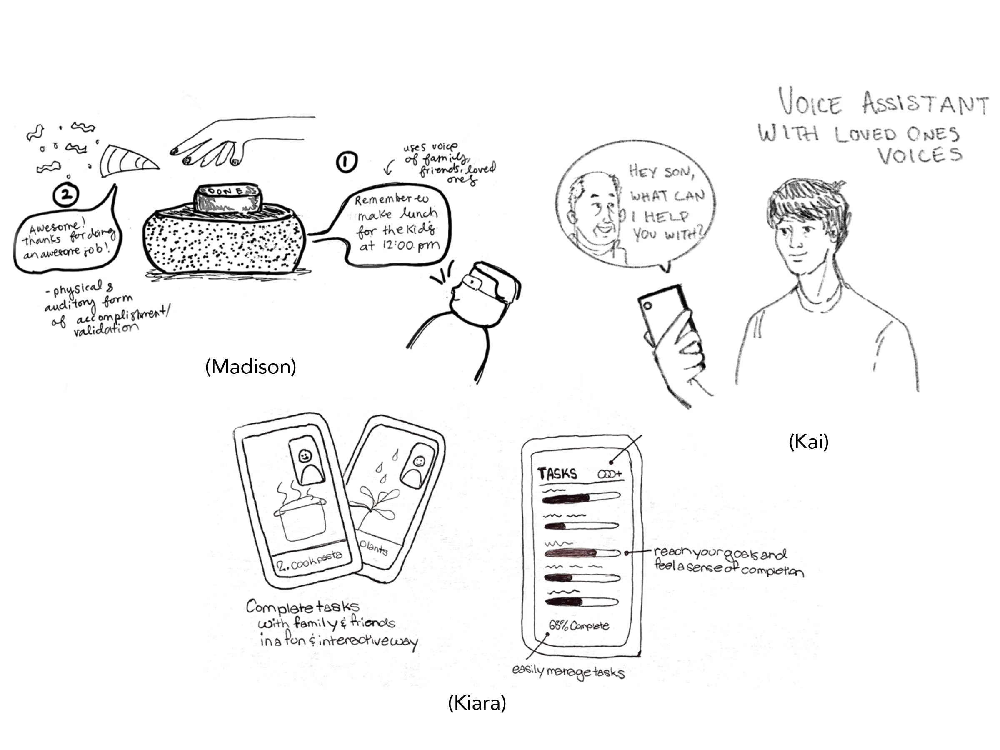

Chef Shares
This was a 5 week Human Centered Design Course project created in collaboration with my teammates Kai and Kiara. All communication amongst our team and participants was conducted via Zoom or phone, in accordance with COVID-19 safety guidelines. My primary role involved UX research, UX design, storyboarding, and illustration.
Our Goal
Identify an issue experienced by parents during shelter in place and develop a concept to address their needs.
Our Solution
An interactive video call app that connects friends and family through cooking, all while eliminating COVID-19 risk exposure.
Research and Empathy Building
In order to determine a specific problem amongst our users of parents during shelter-in-place, we collectively conducted five different interviews with parents with various family structures. During these interviews, our goal was to glean a better understanding of our participants' experiences. We also wanted to create a space for honest dialogue by asking open-ended questions which allowed them to feel comfortable sharing about their frustrations, concerns, or positive experiences throughout shelter in place. Some open-ended questions we asked were: "How is being sheltered-in-place different than your normal life? and "Do you miss anything from before you were sheltered in place? If so, can you tell us about it?"
These interviews were extremely valuable in helping us gain a deeper care for our participants while also providing us insight into each of their unique conditions.
Unpacking
Following our interviews, we then unpacked all the great feedback we received to start forming a variety of potential inferences about what problems were most significant to our participants.
To begin unpacking, we used an empathy map which helped us evaluate a meaningful challenge that we would soon develop for. First, we assessed our notes, looking for responses and quotes that we were surprised to hear. In doing so, we identified a particular participant that shared unique and vulnerable insight with us. Some surprising quotes we heard from her were: "There's a level of measured resentment of my husband, he has this normal life, goes to work everyday, can continue his routine, but I can't even leave the house." and "I wish I could see my parents." Moving forward, our goal was to develop empathy with our user by unpacking her experiences, trying to understand how she felt, and determining the broader thoughts behind words she shared with us. We learned that the most significant issue our participant was experiencing was a lack of social interaction with her friends and family, in addition to deeply missing the independence of her pre-pandemic routine.
About Our User
The user we chose to design for is Sarah, a stay at home mother of 3 boys in middle school and high school. Before quarantine, she would spend hours driving her kids to school, activities, you name it, but while they were at school, she took that time to invest in her favorite hobbies, like going to thrift stores and estate sales, or catching up with friends.
When Covid hit America and shelter-in-place began, it was a difficult transition for Sarah, especially with her husband being a physician and having to work constantly. Due to the nature of his job, he would frequently have to separately quarantine himself from their family for 2 weeks. Oftentimes, it would just be her alone with her 3 boys which to her could feel “suffocating.” She emphasized that being alone with her kids at home all day meant “there was no physical, mental, and emotional separation” that she would get when they used to go to school.
After our interview with Sarah, we learned that she’s had a particularly rough time during quarantine with not having time to herself, battling sickness, and feeling disconnected with loved ones.
Point of View Statement
To start designing for our user, we developed a process to understand Sarah’s problems with a POV statement. Our main finding was that she needed a way to feel supported and connected to her loved ones, similarly to how she engaged with friends and family during pre-pandemic conditions.
Concept Ideation
With our POV Statement at hand and a deeper understanding of our target audience, it was time to start forming concepts. Each team member developed a concept that would allow parents to interactively reconnect with friends and family. Madison created a physical button that would track tasks completed utilizing the voices of loved ones, Kai created a voice assistant mobile app like Siri that would also use the voice of family and friends, and Kiara created a task tracker app where you could collaborate with anyone.
In brainstorming we eventually realized we needed a more linear and simple application, so we decided to focus on addressing one task and making it an engaging activity to virtually do with friends and family. The essential task we wanted to focus on was cooking, which showed to be an important part in the lives of parents during quarantine. The idea for the app would be combining the task of cooking and socializing to create a collaborative cooking competition app that makes it fun and accessible to reconnect with family and friends.
Prototyping

During the prototyping phase we used a multi-stage approach with wireframes, lo-fi, and mid-fi prototypes in order to refine our design and address Sarah’s struggle. Approaching the prototypes with a focus on linearity allowed us to hone in on the problem and address it in a way that was precise and consistent, leading to our refined prototype to hold the user’s hand through the whole process in a step by step manner that evolves based on factors such as friends available to cook, what ingredients each user has, and the inclusion of a optional competitive mode.
User Testing
It was then important to ensure that our app was intuitive, convenient, and met the user’s needs so we conducted usability testing to evaluate the current state of the project. We developed a script and tasks we wanted the user to give input on such as if they found the experience confusing or what features they connected with the most.
Here's what we learned
- Is simple with only 3 main functions
- Needs more options to explore recipes
- Has the potential to generate more excitement from the user experience
- Assumes that cooking is a fun activity
- Assumes the user is prepared to cook
- Offers a linear experience
- Aims to establish a sense of routine that incorporates socialization
One of the key insights we found was our users being confused as to why somebody would use our app versus simply facetiming. We realized we need differentiating and exciting features that would create a better user experience so we built a feature to choose ingredients at hand for easy recipe accessibility.
Final Designs and Prototype
Get Started
Begin your interactive cooking experience by first selecting a friend to cook with.
Choose Your Ingredients
After inviting a friend, you can select the ingredients you want to cook with to customize your cooking experience. Your ingredient selection will then present you a variety of recipe options wthat works best with what you have available.

Start Your Call
You can video chat with your friends or family to cook alongside them, and also easily check to see what step you are on.

Next Steps
In future iterations, we would want to develop a feature that provided a unique experience from just video calling a friend and cooking with them. One idea we had was having the option to change users backgrounds to immerse them in a different environment, making them feel like they were not stuck at home, but having a picnic in the park or on the beach. Having the option to make our users feel like they were in a different setting would be another way to connect them with their pre-pandemic lives.
Takeaways
1
Working under remote conditions was an additional challenge, however this helped us improve our communication skills by encouraging us to delegate tasks more clearly. We also found it effective to jump on Zoom calls together and use intuitive platforms, like Google Slides, to conduct our mind mapping and story boarding.
2
One important step of our design process was conducting a good interview that provided us with a surprising anecdote or new perspective on our challenge. Having an interview rich with personal thoughts and experiences laid the foundation for developing empathy with our participant and determining a meaningful issue they experienced as parents during shelter in place.
3
With more time, we would have liked to invest more time in the initial prototyping phases to explore the feasability of different concepts. Additionally, we would have also wanted to build out different concept ideations from our user feedback to explore alternative solutions to their problems.